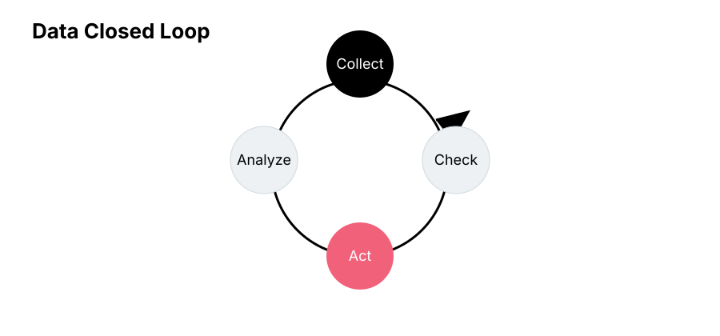
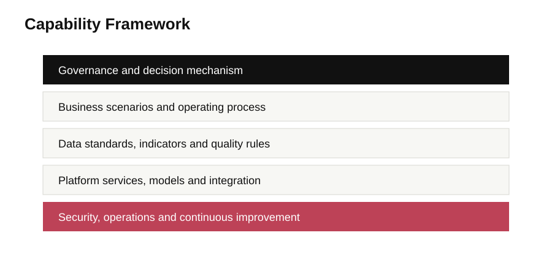
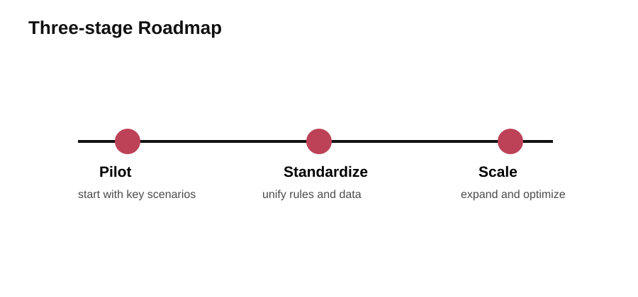
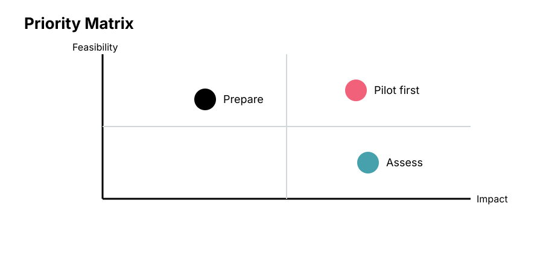
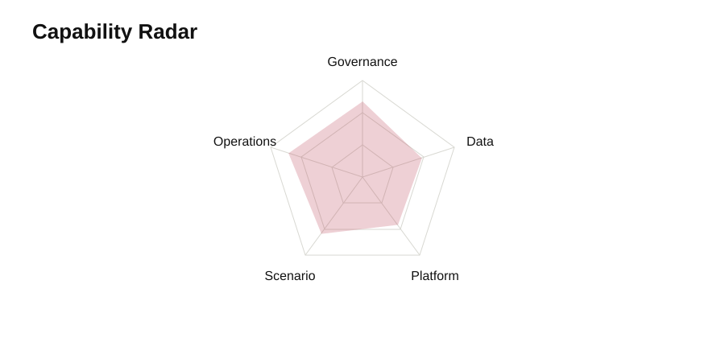

Executive transformation / Wave
让数智化转型进入经营闭环，而不是停留在系统展示
面向经营穿透、数据治理和管理机制建设，把规则、数据、场景和行动连接起来。
Wave
Jade
Flamingo
经营判断
数据证据
管理规则
平台能力
责任闭环
持续行动
Executive transformation template01
Executive summary
转型汇报先给出三个高层判断，
再展开证据、机制和行动路径
规则先于系统
指标口径、责任边界和校核规则不清晰，系统只会放大管理分歧。
数据必须可追溯
优先压降人工填报，把关键经营数据回到源头系统和质量规则。
闭环决定价值
从看见问题走向定位原因、落实责任和验证整改。
核心判断02
Chapter 01
先把经营语言统一，再让平台承载统一后的行动
这一页用于把讨论从“做系统”拉回到“建立共同经营判断和责任机制”。
01口径统一
02来源可信
03责任闭环
共识转场03
Diagnosis
差距诊断要同时说明表象、根因和管理动作
| 表象 | 根因 | 管理动作 |
|---|---|---|
| 经营指标多版本并存 | 定义、周期和责任部门未统一 | 建立集团指标口径机制 |
| 报表依赖人工汇总 | 源头系统采集和接口覆盖不足 | 补强高频场景数据链路 |
| 异常整改难以追踪 | 问题、责任和验证不在同一闭环 | 形成异常识别和督办机制 |
差距诊断04
Operating shift
目标不是多做一套报表，而是让经营分析从事后解释转向前置治理
当前模式
多头取数、人工加工、口径争议、问题发现晚、整改跟踪弱。
→
目标模式
统一指标、源头采集、规则校核、异常预警、责任闭环。
模式转变05
Capability framework
能力框架要把治理机制、业务场景、数据体系和平台能力放到同一张图里
治理机制
指标责任、数据责任、调度机制、整改闭环。
业务场景
经营分析、风险预警、资源配置、督办跟踪。
数据体系
主数据、指标库、数据质量、权限管理。
平台能力
数据集成、模型计算、预警分析、报表服务。
安全运维
访问控制、日志审计、稳定运行、应急处置。
能力框架06
Roadmap
三阶段推进：重点场景牵引、标准组件固化、集团范围推广
01
0-3M
场景试点
- 选择高价值经营场景
- 梳理指标和责任边界
输出：场景样板 / 口径清单
02
3-9M
标准固化
- 沉淀指标库和数据规则
- 打通关键系统接口
输出：指标库 / 标准组件
03
9M+
推广运营
- 扩展产业板块和部门
- 建立运营评估机制
输出：推广机制 / 运营看板
路线图07
Closed loop
闭环页要说明问题如何被发现、分派、整改和验证
01
识别
规则校核和异常预警。
02
定位
原因分析和影响评估。
03
分派
责任部门和整改时限。
04
验证
整改结果和机制沉淀。
闭环机制08
Evidence
证据页要说明案例或截图证明了什么，而不是把图片当装饰
用于放置真实截图、流程证据、访谈摘要或案例观察；未核实材料应标注“待核实”。

证据页09
Prioritization
优先选择高价值、可验证、责任边界清晰的场景作为试点
Readiness
优先试点
01经营看板02异常预警
重点准备
03指标库
暂缓投入
04低频报表
观察验证
05辅助分析
Business value
优先级10
Appendix patterns
图表附件沉淀可复用表达，让后续汇报快速替换内容

能力框架图

三阶段路线图

优先级矩阵图
数据闭环图

能力雷达图
图表附件11
Closing
转型的真正交付物，不是一组页面，而是一套可持续运行的经营机制。
下一步：用重点场景验证规则，用真实数据验证机制，用闭环结果验证价值。
规则统一指标口径和责任边界。
场景优先验证高价值经营闭环。
机制沉淀可推广的运营标准。
总结页12